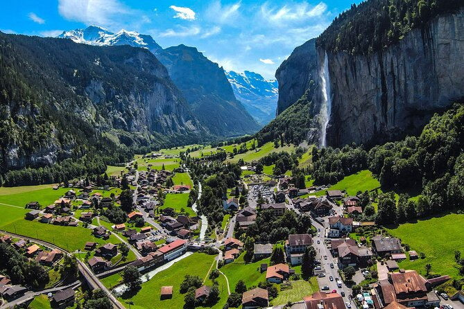
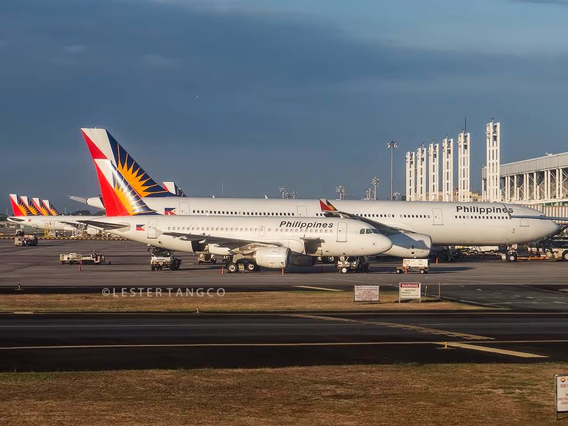

Why Switzerland?
Switzerland has stunning mountains, crystal-clear lakes, and old-fashioned towns, and I adore the outdoors.
It appears to be a tidy and secure area where I can unwind and enjoy myself. I am certain that my time in Switzerland will be one to remember,
whether I am hiking, exploring, or simply unwinding. I will be in awe of the stunning views from the Swiss Alps, which offer plenty of photo opportunities.
I will be able to fully engage in the traditions and culture of the area by touring charming villages like Zermatt and Lucerne. Every moment spent there
promises to be a delightful adventure, with appealing Swiss cuisine to enjoy.

Zermatt & Matterhorn – Famous for its iconic mountain peak, the Matterhorn is a must-visit for adventurers and photographers.
The charming village of Zermatt offers skiing, hiking, and stunning alpine views.

Lucerne – Known for its preserved medieval architecture, Lucerne is nestled amid snowcapped mountains.
The Chapel Bridge and Lake Lucerne make it a picturesque and historic destination.

Interlaken – A paradise for outdoor enthusiasts, Interlaken offers breathtaking scenery and adrenaline-pumping activities,
including paragliding, skiing, and hiking in the Bernese Alps.

Getting There:
To travel from Manila (MNL) to Switzerland, you should first book a flight to major Swiss cities like Zurich, Geneva, or Bern,
usually involving one or more layovers. Ensure you check the visa requirements, as you'll need a valid Schengen visa for entry into Switzerland.
Once you arrive, you can use the efficient public transport system, including trains and buses, to reach your desired destinations.
It's a good idea to research and plan your itinerary to include highlights like the Swiss Alps and charming towns.